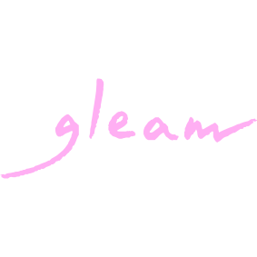
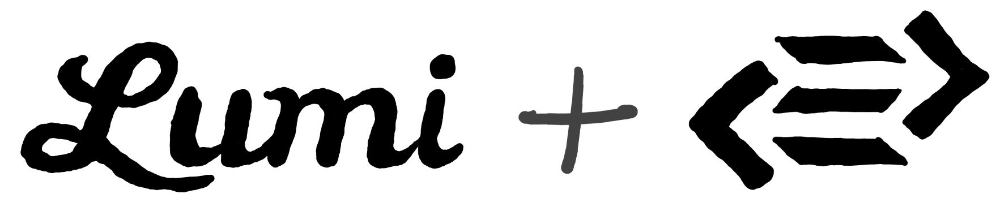

class: slide-dark middle center  ??? I'm here today to talk about Gleam, which is a new statically typed programming language for the Erlang virtual machine that I've been working on for the last 2 or 3 years. Gleam draws inspiration from both BEAM languages such as Elixir and Erlang, and ML languages such as Haskell and Elm. In this talk I'm going to take a look at these two language families and see why I think they're fantastic to work with. We'll take a look at some of their strengths, some of their weaknesses, and how Gleam, this new language, attempts to bring together some of the best traits of both. Lastly I want to share a little of where Gleam is going next, hopefully with some time for questions at the end. --- class: slide-bold middle center <img style="width: 45%; position: absolute; top: 0%; left: 27%" src="img/lucy-charcoal-6.svg"> <br> <br> <br> <br> <br> <br> <br> <br> <br> # Why Erlang? ??? --- class: middle <img class="color-adjust center-element" src="img/the-beam.png"> ??? --- class: middle ??? A telephone switch is a piece of hardware connects phone calls. When a person dials a number of their phone, their local switch identifies where the call is attempting to connect to and creates a complete circuit between the caller and the receiver. Back when the telephone was first invented this would have been the job of a person sitting at a switch-board, physically connecting different circuits with bits of wire. After that came automatic mechanical switches that didn't require a person to make the connection, and later digital switches, which would create virtual circuits within software. It was these digital switches for which Erlang was created in the 80s. In order to meet the unusual requirements of the telephony hardware Erlang and the BEAM developed some rather novel features. --- class: middle <img class="color-adjust center-element" style="max-width: 81%" src="img/telephone-switch.png"> ??? For a telephone switch to be useful it needs to be able to support multiple phone calls at the same time. If you had to wait for your neighbour to get off the phone before you could make a call I suspect telephones probably wouldn't have caught on. Because of this Erlang had to have great concurrency features so that one switch could handle many calls at once. Any program written in Erlang needed to be able to trivially perform a great number of tasks at the same time. This was such an important feature they ended up naming the language after it. As well as being a programming language an Erlang is a unit of concurrency, it measures seconds per second. A telephone switch that can hold 100 simultaneous calls can support a load of 100 Erlangs. --- class: middle ## Agner Krarup Erlang <br> <br> ??? And the unit Erlang was named after this chap Mr Agner Erlang. He was a danish mathematician who in the late 1800s invented the Erlang formula, which continues to be a foundational element in the analysis of telecommunication networks and concurrent system to this day. By all accounts quite an impressive person, and a good bit of history for our ecosystem to have a link to. --- class: middle <img class="color-adjust center-element" style="max-width: 81%" src="img/telephone-switch.png"> ??? Fast forward 100 years: When it comes to concurrency the BEAM can definitely scale, but it's not good enough to merely be possible; Ericsson needed this to be relatively easy so their firmware developers could be as productive as possible. Asynchronous programming is notoriously difficult, especially if you're working with tools like locks, callbacks, and shared mutable state, so the creators of Erlang went down a different route. Rather than having a small number of threads each handling a large number of concurrent tasks, in the Erlang world we use a great number of threads, but each thread only has 1 task to perform. --- class: middle ??? If each thread only has to do one thing it can be written in a sequential fashion. The programmer doesn't have to write any asynchronous code within the single thread. To paraphrase the late Joe Armstrong, creator of Erlang: It's difficult to write a web server capable handling 2 million sessions. However, it is much easier to a write web server capable of handling a single session, and to then run 2 million copies of it. --- class: middle minimal-padding <img class="color-adjust center-element" style="max-width: 95%" src="img/multi-threaded.png"> ??? To support this level of concurrency Erlang threads are not implemented as operating systems threads, instead they are lightweight threads called Processes, running on their own scheduler within the BEAM. Sadly the processes in these telephony switches couldn't be completely isolated from each other, there's always going to need to be some communication and synchronisation between threads in any program. --- class: middle ??? Rather than using shared state communicate with each other Erlang processes communicate by sending messages to each other. What's more processes within a telephone switch don't need to just talk to processes within the same switch, they also need to communicate with many other devices in the network, as calls are routed through various pieces of telephone hardware to get to their destination. To facilitate cross-network communication the BEAM has distributed computing features built in. When sending a message it doesn't matter if - the processes are running on the same instance of the BEAM, - different instances of the BEAM on the same computer, - or even two completely different computers connected by a network: The processes can still send messages to each other. Distributed computing is built into the BEAM, a typical BEAM program written in Erlang or Elixir can be turned into distributed program that runs on a cluster of networked computers with minimal effort. Fantastic! --- class: middle <br> <img class="color-adjust center-element" src="img/isolation.png"> ??? And perhaps most excitingly, Erlang processes act as error bulkheads, meaning that when something does go wrong and your code crashes the problem is contained to the smallest possible sub-system and will not impact any other work being undertaken by the program. An Erlang program that takes advantage of this property can self heal by restarting the process and trying again, hopefully succeeding now that any corrupt state has been shed. In this way the BEAM is much like Kubernetes, the popular container orchestrator from Google. What makes the BEAM different from Kubernetes is that this state shedding can happen at a much more fine grained level- we won't lose the state of the entire program and all the requests being handled by it, instead just the single process that had the problem. I like to think the relationship between the BEAM and Kubernetes being similar to the relationship between Kubernetes and datacenter failover. They're similar, but they operate at different levels of abstraction. And they can compliment each other quite well. --- <img class="color-adjust center-element" style="" src="img/telephones-to-computers.png"> ??? The BEAM was created with the problem of telephony in mind, but it turns out that what was once quite a niche set of problems is actually quite commonplace today. Concurrency, parallelism, distribution, consistent low latency, and fault tolerance: these are characteristics we want in networked services today. The BEAM has almost by chance has become an excellent platform for building web applications, databases, message brokers, or many of these other things that web developers deal with on a daily basis. --- class: middle <img class="center-element" src="img/beam-languages.png"> ??? So now we've seen a little of why I think the BEAM is a wonderful platform, but I've not answer the question of why make a new language at all. We already have several fantastic languages on the BEAM such as Erlang, Elixir, and LFE. Why spend all this time creating Gleam when we could use one of these? To answer this question I'd like to take a closer look at the BEAM's self healing properties and how that impacts us as developers and operators of software. --- class: minimal-padding middle center ??? It's a normal day at work and I've got a change to make to an application. Perhaps I'm adding a feature, maybe we're removing a bug, it doesn't matter, I'm making some sort of change. I spend some time editing the code, making my changes. --- class: minimal-padding middle center <img style="max-width: 85%" class="color-adjust" src="img/cycle-2.png"> ??? Once satisfied run the compiler to build the application, which completes successfully, reporting no problems. --- class: minimal-padding middle center <img style="max-width: 85%" class="color-adjust" src="img/cycle-3.png"> ??? After that I run the unit tests on my laptop to ensure I've not broken anything, and then push my changes to GitHub. --- class: minimal-padding middle center ??? Once uploaded the code triggers a build on the CI server. It runs all the unit and integration tests, and runs some linters to try and spot any mistakes. --- class: minimal-padding middle center <img style="max-width: 85%" class="color-adjust" src="img/cycle-5.png"> ??? If all those checks pass then it deploys the new application version to a staging environment. --- class: minimal-padding middle center <img style="max-width: 85%" class="color-adjust" src="img/cycle-6.png"> ??? On the staging environment I manually test the application and demo the new behaviour to stakeholders who give the green light to continue. --- class: minimal-padding middle center ??? Meanwhile, on GitHub the code is reviewed by some of the other programmers on my team, as they may have some context or insights that I do not. --- class: minimal-padding middle center <img style="max-width: 85%" class="color-adjust" src="img/cycle-8.png"> ??? Happy with my changes they approve it and the code is merged into master, triggering another CI build. --- class: minimal-padding middle center <img style="max-width: 85%" class="color-adjust" src="img/cycle-9.png"> ??? All the tests and linters are run again to ensure no problems were introduced during the merging process. --- class: minimal-padding middle center <img style="max-width: 85%" class="color-adjust" src="img/cycle.png"> ??? And lastly, once the tests have passed again the code is deployed to production, and released to our users. Satisfied with a job well done, I go for lunch. But then! Disaster strikes! Users are reporting that the application no longer works as intended. Right at the very beginning when I was editing the code I made a mistake and introduced a bug. Each one of these steps has failed to detect the problem and now the bug has snuck into production. Luckily the application is written in Erlang so the impact of the problem has been minimised, but I still need to fix the problem as a matter of urgency. --- class: center middle ??? In this instance the problem was discovered just a few hours after I made the mistake, so the change is still fresh in my mind and it's not too difficult to correct it, but that's not always the case. Depending on the culture of the company I'm working at it might take days or weeks for a change to be deployed to production, or it might have taken longer for the users to discover the problem. Worse case scenario it has been months or years and the writer of the bug has long since left the company, leaving me to try and fix code I've never seen before. --- class: center middle <img style="max-width: 71%; position: relative; left: -20px" class="color-adjust" src="img/science.png"> ??? The larger the gap between the mistake being made and the problem being detected the more difficult it will be to fix. Of course this isn't the only factor in the difficulty, but it is an important multiplier. Erlang gives us powerful tools to tolerate mistakes and debug them, but they largely only help us once the code is in production, and that time cost and loss of familiarity is far from optimal. --- class: minimal-padding middle center center <img style="max-width: 85%" class="color-adjust" src="img/bug-detected.png"> ??? What I really want is to for problems to be detected here, immediately after the mistake was made. I want that feedback loop to be as fast as possible so we can spend less time doing exploratory work (such as debugging) and more time iterating (actually providing business value). --- class: minimal-padding center middle <img class="color-adjust" style="max-width: 90%" src="img/ml-family.png"> ??? Gleam aims to provide that fast and safe feedback loop by introducing a type system inspired by those found in the ML family of languages. Why these languages? Because I believe they are currently the languages that do best at providing this rapid feedback loop. Let's look at some examples: --- ## Reason <img class="center-element" style="max-width: 60%" src="img/messenger.png"> > Messenger used to receive bugs reports on a daily basis; since the > introduction of Reason, there have been a total of 10 bugs (that's during > the whole year, not per week)! > Refactoring speed went from days to hours to dozens of minutes. <cite> https://reasonml.github.io/blog/2017/09/08/messenger-50-reason.html </cite> ??? Messenger is Facebook's web chat program. It has 1.3 billion monthly users. Back in 2016 they started converting the web client from Javascript to a dialect of OCaml called Reason. A year later 50% of their code was written in Reason and they had this to say: **QUOTE** Quite an impressive statement! --- ## Elm <img class="center-element" style="max-width: 70%" src="img/noredink.png"> > After 2 years and 200,000 lines of production Elm code, we got our first > production runtime exception. > In that period, our legacy JS code has crashed a mere 60,000 times. <cite> Richard Feldman - https://twitter.com/rtfeldman/status/961051166783213570 </cite> ??? NoRedInk are a company in the United States that provide education software. Back in 2016 they started adding Elm code to their Coffeescript web application with great success. In 2018 one of their engineers, Richard Feldman, posted this tweet: **QUOTE** This is not to say the engineers at NoRedInk and Facebook are without error, they make as many mistakes as you or I. The key takeaway here is that they are discovering and fixing their mistakes before they get to production, or at least the ones that cause runtime errors. --- ## Purescript  > [I’ve had] such a positive experience, with little mental overhead, and > total trust in the compiler. I implemented an entire page with a list of > data, filters, search, and pagination which worked first time. <cite> Brandon Martin - https://www.lumi.dev/blog/purescript-and-haskell-at-lumi </cite> ??? Lumi are a company that provide custom eco-friendly branded packaging for online stores. In 2018 they started converting their Javascript frontend into a Purescript frontend. After a few months of Purescript in anger engineer Brandon Martin had this to say: **QUOTE** What I like about this is the feeling of trust in the compiler, that it is something that can be relied on. With Gleam I want to create the experience in the BEAM ecosystem of the compiler being like a pair programming partner, there to help by catching mistakes and providing additional insight. --- class: slide-bold middle center <img style="width: 45%; position: absolute; top: 0%; left: 27%" src="img/lucy-charcoal-6.svg"> <br> <br> <br> <br> <br> <br> <br> <br> # Error detection ??? How do they achieve this? By having a compiler capable of analysing the code for inconsistencies, and providing precise feedback to the programmer, detailing every place where a problem may arise. Once the programmer has this ability to discover all the possible problems in the application the way they approach writing code can change. --- class: l-code extra-padding <br> ```rust fn get_user_name(user) { user.name } ``` <center><h3>⇩⇩⇩ becomes ⇩⇩⇩</h3><center> ```rust fn get_user_name(user) { case user.name { "" -> Error(Nil) _ -> Ok(name) } } ``` ??? First the programmer makes an edit, informing the compiler of the change they wish to make. For example, perhaps a function has been changed to sometimes return a null value under certain circumstances. In languages like Erlang without this static analysis it is up to the programmer to now find all the the places in the codebase that need to be updated to correctly handle this new nullable value. In Erlang they would possibly do this using a mix of already existing unit tests and their familiarly with the codebase. That would aid their manual search. --- <br> ??? In Gleam and ML languages the compiler outputs a TODO list of inconsistencies, and the programmer goes through the list, fixing them one by one. No need for doing discovery work- just state the change to be made, and the compiler then shows you how to integrate that change. As I said before you can achieve the same with a robust set of unit tests, but I think this system has a few advantages. We don't have to write the tests, the compiler does this checking for us. This static analysis can be thought of as basic full test coverage for free. It even covers code that is hard to test, such as code that performs IO. Secondly this static analysis is fast. A large codebase can be checked in seconds or fractions of a second, while the tests may take minutes. Thirdly the compiler can provide the precise location of the cause of the error, while tests can only ever give you the location of a resulting symptom. Once a test presents an error it is up to the programmer to determine if the problem originated there or somewhere else entirely. --- class: slide-bold middle center <img style="width: 50%; position: absolute; top: -5%; left: 25%" src="img/lucy-charcoal-5.svg"> <br> <br> <br> <br> <br> <br> <br> ## Do we need fault tolerance? ??? It might seem like **with** this ML style error detection the BEAM's runtime fault tolerance and error handling features are somewhat redunant, but I think they can complement each other quite nicely. The error detection means that we are aware of all the places where there can be a problem, and then we can make an explicit decision about how we want to handle it. And because the decision of how to handle an error is now explicit the compiler can tell if a crash is intentional, or if a mistake has been made. This isn't very clear, so let's look at some examples. --- class: l-code extra-padding ## Programmer mistake ```rust fn main() { list.reverse("hello") // Error! Not a list } ``` <center><h3>⇩⇩⇩ use the correct function ⇩⇩⇩</h3><center> ```rust fn main() { string.reverse("hello") // That's better :) } ``` ??? Imagine a problem caused by a mistake on my part as a programmer For example, I'm trying to reverse a binary string, but I'm using a function that reverses lists. In this case once the error has been highlighted to me by the compiler I realise I've made a mistake, and then I'm going to fix the bug. Erlang's fault tolerance wasn't useful here. If a trivial mistake like this has been made I want to find it and I want to fix it. --- class: l-code extra-padding ## Incorrect user input ```rust fn handle(request) { let input = decode_json_body(request) // Error! JSON could be invalid save_record(input) } ``` <center><h3>⇩⇩⇩ handle invalid input ⇩⇩⇩</h3><center> ```rust fn handle(request) { case decode_json_body(request) { Ok(input) -> save_record(input) Error(reason) -> unprocessable_entity(reason) } } ``` ??? Another situation in which errors may arise is when dealing with user input. Here we have a handler function from a web application; it takes a request data structure and returns an appropriate response. As part of this it reads some data from the request body, and that data has been in encoded in the JSON format. The problem here is that the request body might not contain valid JSON, we can't rely on always getting the correct input from the outside world. Once this problem has been highlighted to us by the static analysis the most practical thing to do is to check whether the JSON is valid or not. If it isn't we can then return an error message to the user, informing them that there is something wrong with their JSON encoding. If we can pass an error back up the chain to the user then that's often the best thing to do. Erlang's fault tolerance wasn't useful here either. --- class: l-code extra-padding ## Background processing ```rust fn process_video(id) { let metadata = lookup_metadata(id) create_thumbnails(metadata) transcode_video(metadata) "done!" } ``` ??? I used to work at a start up that did video transcoding. We had a lot of jobs that ran in the background and as a result they didn't immediately have a user attached to them. One of the jobs looked like this: - first it looked up some metadata from the database - then it created some thumbnail images - lastly it transcoded a video into some other format Each one of these steps is expected to always succeed according to our business logic, but because of the nature of the universe there is very real chance these things could fail. - A faulty hard drive could corrupt a video file, - the unreliable network could cause a database lookup to fail. - There could be a bug in the third party transcoder software that causes it to crash. --- class: l-code extra-padding ## Defensive programming ```rust fn process_video(id) { case lookup_metadata(id) { Ok(metadata) -> case create_thumbnails(metadata) { Ok(result) -> case transcode_video(metadata) { Ok(_) -> "done!" Error(transcoder_error) -> todo } Error(transcoder_error) -> todo } Error(database_error) -> todo } } ``` ??? The ML style error detection forces the programmer to acknowledge these potential problems, and we end up this verbose nested code. After each step the programmer has to check to see whether if failed, and then do *something* with the error if it is present. This code is much less clear than the previous version. It's harder to tell what the business logic is here as it is obscured by error handling. --- class: l-code extra-padding ## Defensive programming ```rust fn process_video(id) { let result = id |> lookup_metadata |> result.then(_, fn(metadata) { metadata |> create_thumbnails |> result.map(_, fn(_) { metadata }) }) |> result.then(_, transcode_video) case result { Ok(_) -> "done!" Error(e) -> todo // What do we do here? } } ``` ??? It's possible to rewrite the job using some higher order functions that extract some of the conditional logic. This removes some of the nesting but now the reader needs to be familiar with all of the extra functions used to understand the code, and the code is still much more complicated than what we started with. To make matters worse it's not even clear what we should do with the error once we have it. There's no user to return it to. Perhaps we need to create some kind of error logging system. At this point I suspect that any Erlang people in the audience are itching to jump up and shout there is another way to approach this. There is an alternative to this defensive programming. --- class: l-code extra-padding ## Offensive programming ```rust fn process_video(id) { assert Ok(metadata) = lookup_metadata(id) assert Ok(_) = create_thumbnails(metadata) assert Ok(_) = transcode_video(metadata) "done!" } ``` ??? And that alternative is offensive programming. If your business logic says that something should never fail, and you have no way of reasonably handling the failure, don't check for the error. Instead make an assertion saying "in order to continue no error must happened", and if there was an error we crash the process as there's no sensible way to continue *at the process level*. And now the BEAM's fault tolerant properties come into play- the crash is logged and reported, and the process can be restarted as required. The rest of the program continues running without problem. As the Erlang saying goes, let it crash. --- class: slide-bold middle center <h1 style="font-size: 5em">Let it crash</h1> ## (if you're sure) ??? The ML style type system helps us find all places where error can happen, and then we can categorised them into two different groups. The errors that are expected within our domain, such as invalid user input, we can deal with locally with conditional logic. The errors which are exceptional and outside out domain, such as data corruption, can be handled non-locally using processes and the BEAM. If an error is truly unexpected it shouldn't get in the way of your business logic, and you shouldn't have to write extra code for your program to tolerate it. --- class: slide-bold middle <img style="width: 45%; position: absolute; top: 0%; left: 30%" src="img/lucy-charcoal-2.svg"> <br> <br> <br> <br> <br> <br> <br> # What's next for Gleam? ??? --- class: middle, slide-bold <img style="width: calc(100% - 540px); position: absolute; right: -10px; bottom: 10px" src="img/lucy-charcoal.svg"> <img style="width: 300px; margin: -110px -20px" src="img/gleam-charcoal.svg"> - https://gleam.run - https://github.com/gleam-lang/gleam - IRC `#gleam-lang` on Freenode ### Sponsor Gleam - https://github.com/sponsors/lpil ### Call me? - twitter @louispilfold ???